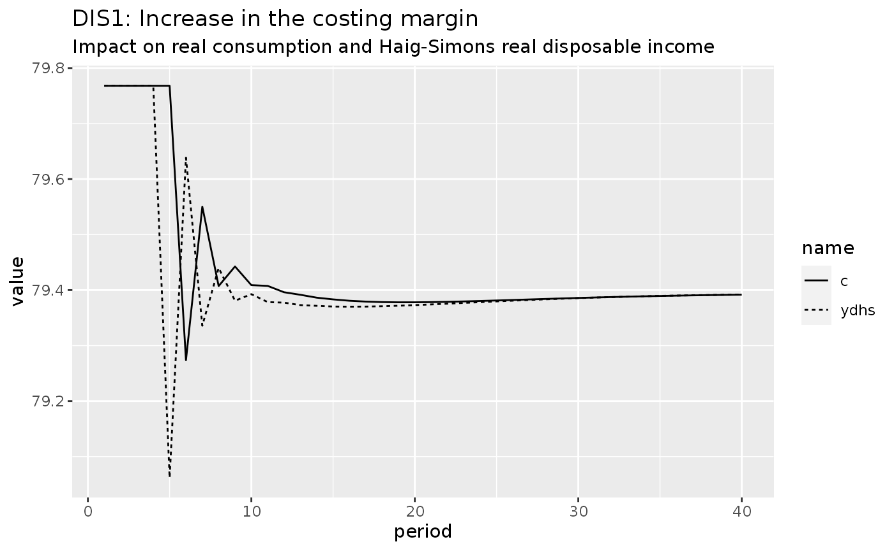

Load the required packages:
library(sfcr)
library(tidyverse)
#> ── Attaching packages ─────────────────────────────────────── tidyverse 1.3.1 ──
#> ✔ ggplot2 3.3.5 ✔ purrr 0.3.4
#> ✔ tibble 3.1.5 ✔ dplyr 1.0.7
#> ✔ tidyr 1.1.4 ✔ stringr 1.4.0
#> ✔ readr 2.0.2 ✔ forcats 0.5.1
#> ── Conflicts ────────────────────────────────────────── tidyverse_conflicts() ──
#> ✖ dplyr::filter() masks stats::filter()
#> ✖ dplyr::lag() masks stats::lag()Model DIS
Equations
As it is usual, we start by defining the equations, exogenous values, and parameters of the model:
dis_eqs <- sfcr_set(
# The production decision
y ~ s_E + inv_E - inv[-1],
inv_T ~ sigma_T * s_E,
inv_E ~ inv[-1] + gamma * (inv_T - inv[-1]),
inv ~ inv[-1] + (y - s),
s_E ~ beta * s[-1] + (1 - beta) * s_E[-1],
s ~ c,
N ~ y / pr,
WB ~ N * W,
UC ~ WB / y,
INV ~ inv * UC,
# The pricing decision
S ~ p * s,
p ~ (1 + phi) * NHUC,
NHUC ~ (1 - sigma_T) * UC + sigma_T * (1 + rl[-1]) * UC[-1],
EF ~ S - WB + (INV - INV[-1]) - rl[-1] * INV[-1],
# The banking system
Ld ~ INV,
Ls ~ Ld,
Ms ~ Ls,
rm ~ rl - add,
EFb ~ rl[-1] * Ls[-1] - rm[-1] * Mh[-1],
# The consumption decision
YD ~ WB + EF + EFb + rm[-1] * Mh[-1],
Mh ~ Mh[-1] + YD - C,
ydhs ~ c + (mh - mh[-1]),
C ~ c * p,
mh ~ Mh / p,
c ~ alpha0 + alpha1 * ydhs_E + alpha2 * mh[-1],
ydhs_E ~ epsilon * ydhs[-1] + (1 - epsilon) * ydhs_E[-1]
)
dis_ext <- sfcr_set(
# Exogenous variables
rl ~ 0.025,
pr ~ 1,
W ~ 0.75,
# Parameters
add ~ 0.02,
alpha0 ~ 15,
alpha1 ~ 0.8,
alpha2 ~ 0.1,
beta ~ 0.75,
epsilon ~ 0.75,
gamma ~ 0.25,
phi ~ 0.25,
sigma_T ~ 0.15
)Baseline
And then we simulate the model:
dis <- sfcr_baseline(equations = dis_eqs,
external = dis_ext,
periods = 100,
hidden = c("Mh" = "Ms"))It is always a good indication when the model runs with the hidden condition on. Let’s now check that it arrives at a sensible steady state value:
dis %>%
pivot_longer(cols = -period) %>%
filter(name == "ydhs") %>%
ggplot(aes(x = period, y = value)) +
geom_line(aes(linetype = name)) +
labs(title = "DIS: reasonable steady state")DAG structure
Let’s take a look on the structure of the model:
sfcr_dag_cycles_plot(dis_eqs)As we can see, the model is fully recursive, which means that every variable can be determined independently once the variables above it has been determined (and the external variables were supplied). Not surprisingly, it is incredibly fast to estimate this model.
Matrices of model DIS
Balance-sheet matrix
bs_dis <- sfcr_matrix(
columns = c("Households", "Production firms", "Banks", "Sum"),
codes = c("h", "p", "b", "s"),
c("Money", h = "+Mh", b = "-Ms"),
c("Loans", p = "-Ld", b = "+Ls"),
c("Inventories", p = "+INV", s = "+INV"),
c("Balance", h = "-Mh", s = "-Mh")
)Display:
sfcr_matrix_display(bs_dis)| Households | Production firms | Banks | Sum | \(\sum\) | |
|---|---|---|---|---|---|
| Money | \(+Mh\) | \(-Ms\) | \(0\) | ||
| Loans | \(-Ld\) | \(+Ls\) | \(0\) | ||
| Inventories | \(+INV\) | \(+INV\) | \(0\) | ||
| Balance | \(-Mh\) | \(-Mh\) | \(0\) | ||
| \(\sum\) | \(0\) | \(0\) | \(0\) | \(0\) | \(0\) |
Validate:
sfcr_validate(bs_dis, dis, "bs")
#> Water tight! The balance-sheet matrix is consistent with the simulated model.Transactions-flow
tfm_dis <- sfcr_matrix(
columns = c("Households", "Firms_current", "Firms_capital", "Banks_current", "Banks_capital"),
codes = c("h", "fc", "fk", "bc", "bk"),
c("Consumption", h = "-C", fc = "+C"),
c("Ch. Inventories", fc = "+d(INV)", fk = "-d(INV)"),
c("Wages", h = "+WB", fc = "-WB"),
c("Interest on loans", fc = "-rl[-1] * Ld[-1]", bc = "rl[-1] * Ls[-1]"),
c("Entrepreneurial Profits", h = "+EF", fc = "-EF"),
c("Banks profits", h = "+EFb", bc = "-EFb"),
c("Interest on deposits", h = "+rm[-1] * Mh[-1]", bc = "-rm[-1] * Mh[-1]"),
c("Change loans", fk = "+d(Ld)", bk = "-d(Ls)"),
c("Change deposits", h = "-d(Mh)", bk = "+d(Ms)")
)Display:
sfcr_matrix_display(tfm_dis, "tfm")| Households | Firms_current | Firms_capital | Banks_current | Banks_capital | \(\sum\) | |
|---|---|---|---|---|---|---|
| Consumption | \(-C\) | \(+C\) | \(0\) | |||
| Ch. Inventories | \(+\Delta INV\) | \(-\Delta INV\) | \(0\) | |||
| Wages | \(+WB\) | \(-WB\) | \(0\) | |||
| Interest on loans | \(-rl_{-1}\cdot Ld_{-1}\) | \(rl_{-1}\cdot Ls_{-1}\) | \(0\) | |||
| Entrepreneurial Profits | \(+EF\) | \(-EF\) | \(0\) | |||
| Banks profits | \(+EFb\) | \(-EFb\) | \(0\) | |||
| Interest on deposits | \(+rm_{-1}\cdot Mh_{-1}\) | \(-rm_{-1}\cdot Mh_{-1}\) | \(0\) | |||
| Change loans | \(+\Delta Ld\) | \(-\Delta Ls\) | \(0\) | |||
| Change deposits | \(-\Delta Mh\) | \(+\Delta Ms\) | \(0\) | |||
| \(\sum\) | \(0\) | \(0\) | \(0\) | \(0\) | \(0\) | \(0\) |
Validate:
sfcr_validate(tfm_dis, dis, "tfm")
#> Water tight! The transactions-flow matrix is consistent with the simulated model.Sankey’s diagram
sfcr_sankey(tfm_dis, dis)Scenarios
Before seeing how this model reacts to changes in some of its parameters, let’s write a helper function to generate some useful ratios, convert the model to the long format, and provide a skeleton of the ggplot2 call:
do_plot <- function(model, variables) {
model %>%
mutate(Y = s * p + (inv - lag(inv)) * UC,
delta_inv = inv - lag(inv),
delta_inv_T = inv_T - lag(inv_T),
delta_inv_E = inv_E - lag(inv_E),
delta_INV = INV - lag(INV),
inflation = (p - lag(p)) / lag(p),
UCp = UC/p) %>%
pivot_longer(cols = -period) %>%
filter(name %in% variables) %>%
ggplot(aes(x = period, y = value)) +
geom_line(aes(linetype = name))
}Scenario 1: One-shot increase in the costing margin
Simulate a new scenario with a shock:
shock1 <- sfcr_shock(
variables = sfcr_set(
phi ~ 0.35
),
start = 5,
end = 40
)
dis1 <- sfcr_scenario(baseline = dis,
scenario = shock1,
periods = 40)And plot:
dis1 %>%
do_plot(variables = c("c", "ydhs")) +
labs(title = "DIS1: Increase in the costing margin",
subtitle = "Impact on real consumption and Haig-Simons real disposable income") It is interesting to note that the impact on consumption is quite negligible. the costing margin increased from 25% to 35% but the real consumption fell from 79.8 to 79.4.
Scenario 2: Increase in the target inventories to sales ratio
shock2 <- sfcr_shock(
variables = sfcr_set(
sigma_T ~ 0.25
),
start = 5,
end = 50
)
dis2 <- sfcr_scenario(dis, shock2, 50)
dis2 %>%
do_plot(variables = c("ydhs", "c")) +
labs(title = "DIS2: Increase in the target inventories to sales ratio",
subtitle = "Impact on real consumption and Haig-Simons disposable income")
dis2 %>%
do_plot(variables = c("delta_inv", "delta_inv_E")) +
labs(title = "DIS2: Increase in the target inventories to sales ratio",
subtitle = "Evolution of inventories and desired inventories")
#> Warning: Removed 2 row(s) containing missing values (geom_path).This Figure shows one inconsistency of the model simulated in Godley and Lavoie (2007). The authors say that Figure 9.3 (see p. 298-299) “shows that the change in realized inventories is systematically inferior to the desired change, because of the adaptive expectations of households.”
However, the figure above clearly shows the opposite: it is the desired variation (delta_inv_E) that remains systematically below the real variation of inventories. In turn, this result makes absolute sense, as it shows that after a shock that triggers an increase in the inventories, the firms systematically produce above their expectations. This behavior leads to a correction in the next period until a steady state is achieved. If the reverse was true, the firms would be systematically wrong by producing less than expected, and would correct upwards, which would lead the model to an explosive path.
Model DISINF
Baseline
- Set the equations and the external variables:
disinf_eqs <- sfcr_set(
# The production decision
y ~ s_E + inv_E - inv[-1],
inv_T ~ sigma_T * s_E,
inv_E ~ inv[-1] + gamma * (inv_T - inv[-1]),
inv ~ inv[-1] + (y - s),
s_E ~ beta * s[-1] + (1 - beta) * s_E[-1],
s ~ c,
N ~ y / pr,
WB ~ N * W,
UC ~ WB / y,
INV ~ inv * UC,
# The pricing decision
S ~ p * s,
p ~ (1 + phi) * (1 + rrc * sigma_T) * UC,
# We have no more NHUC here
EF ~ S - WB + (INV - INV[-1]) - rl * INV[-1],
# The banking system
Ld ~ INV,
Ls ~ Ld,
Ms ~ Ls,
rm ~ rl - add,
EFb ~ rl[-1] * Ls[-1] - rm[-1] * Mh[-1],
pic ~ (UC / UC[-1]) - 1,
rl ~ (1 + rrc) * (1 + pic) - 1,
# The consumption decision
YD ~ WB + EF + EFb + rm * Mh[-1],
Mh ~ Mh[-1] + YD - C,
ydhs ~ c + (mh - mh[-1]),
yd ~ YD / p,
C ~ c * p,
mh ~ Mh / p,
c ~ alpha0 + alpha1 * ydhs_E + alpha2 * mh[-1],
#c ~ alpha0 + alpha1 * yd + alpha2 * mh[-1],
ydhs_E ~ epsilon * ydhs[-1] + (1 - epsilon) * ydhs_E[-1],
# The inflation process
omega_T ~ Omega0 + Omega1 * pr + Omega2 * (N / Nfe),
W ~ W[-1] * (1 + Omega3 * (omega_T[-1] - (W[-1]/p[-1]))),
yfe ~ (1 + sigma_T) * s - inv[-1],
Nfe ~ s / pr
)
disinf_ext <- sfcr_set(
# Exogenous variables
rrc ~ 0.025,
pr ~ 1,
#W ~ 0.75,
# Parameters
add ~ 0.02,
alpha0 ~ 15,
alpha1 ~ 0.8,
alpha2 ~ 0.1,
beta ~ 0.9,
epsilon ~ 0.8,
gamma ~ 0.25,
phi ~ 0.24,
sigma_T ~ 0.2,
Omega0 ~ -1.4,
Omega1 ~ 1,
Omega2 ~ 1.2,
Omega3 ~ 0.3
)One should note here that it is never a good idea to divide something by zero. The default initial values on the sfcr package is 1e-15, i.e., something very close to zero, but not exactly zero so the models will run.
However, this can lead to explosive and non-sense trajectories. In this model, it is advisable to set the initial value of p and UC to something different than 0. It is also advisable to initialize the W so the model can also start.
disinf <- sfcr_baseline(equations = disinf_eqs,
external = disinf_ext,
periods = 200,
initial = sfcr_set(p ~ 1, W ~ 1, UC ~ 1),
tol = 1e-20)
disinf %>% do_plot(variables = c("y"))
Scenario 1: Increase in the costing margins
The main aspect of this model is that households take into consideration the erosion of their wealth that arise as a consequence of inflation. Hence, there shouldn’t be any real long-term consequence of inflation in this model. Let’s check it out:
shock1 <- sfcr_shock(
variables = sfcr_set(
phi ~ 0.3
),
start = 5,
end = 100
)
disinf1 <- sfcr_scenario(baseline = disinf,
scenario = shock1,
periods = 100,
tol = 1e-15)
disinf1 %>%
do_plot(variables = c("inflation", "pic")) +
labs(title = "DISINF1: Increase in costing margins",
subtitle = "Inflationary consequences")
#> Warning: Removed 1 row(s) containing missing values (geom_path).
disinf1 %>%
do_plot(variables = c("p", "UC", "UCp")) +
labs(title = "DISINF1: Increase in costing margins",
subtitle = "Evolution of UC/p ratio")Scenario 2: Increase in the target real wage
What’s the effect of the Omega0 parameter in this model?
shock2 <- sfcr_shock(
variables = sfcr_set(
Omega0 ~ -1
),
start = 5,
end = 100
)
disinf2 <- sfcr_scenario(baseline = disinf,
scenario = shock2,
periods = 100,
tol = 1e-20)Sensitivity test
Let’s check it out with a sensitivity test.
In this test, we are going to expand Omega0 to generate many baseline models, and we will later apply the same shock to these models.
Omega0 <- seq(-1.4, 2, 0.4)
xdisinf_ext <- sfcr_expand(disinf_ext, variable = Omega0, value = Omega0)
xdisinf <- sfcr_multis(
xdisinf_ext,
disinf_eqs,
initial = sfcr_set(p ~ 1, W ~ 1, UC ~ 1),
periods = 100
)
shock2 <- sfcr_shock(
variables = sfcr_set(
phi ~ 0.3
),
start = 10,
end = 45
)
xdsf1 <- sfcr_multis(xdisinf, shock2, periods = 45)
library(RColorBrewer)
mypal <- colorRampPalette(brewer.pal(6, "GnBu")[3:6])
mypal2 <- colorRampPalette(brewer.pal(6, "OrRd")[3:6])
xdsf1 %>%
bind_rows() %>%
group_by(simulation) %>%
mutate(ydhs_ss = alpha0 / (1 - alpha1 - alpha2*sigma_T * (UC/p))) %>%
ungroup %>%
pivot_longer(cols = -c(period, simulation)) %>%
filter(name %in% c("ydhs", "c", "ydhs_ss")) %>%
mutate(inter = interaction(as_factor(simulation), as_factor(name))) %>%
ggplot(aes(x = period, y = value)) +
geom_line(aes(color = inter), size = 1.5, alpha = .9) +
theme(legend.position = "none") +
facet_wrap(~simulation, scales = "free_y") +
scale_color_manual("", values = c(mypal(length(Omega0)), mypal2(length(Omega0)), rep("grey", length(Omega0))))The real consequences are precisely the same for every single parameter.
Scenario 2: Increase in the real interest rate
shock2 <- sfcr_shock(
variables = sfcr_set(
rrc ~ 0.35
),
start = 5,
end = 60
)
disinf2 <- sfcr_scenario(baseline = disinf,
scenario = shock2,
periods = 60,
tol = 1e-20)
disinf2 %>%
do_plot(variables = c("inflation", "pic")) +
labs(title = "DISINF2: Increase in the real interest rate",
subtitle = "Inflationary consequences")
#> Warning: Removed 1 row(s) containing missing values (geom_path).Interestingly, in this model, an interest rate hike leads to higher inflation.
disinf2 %>%
do_plot(variables = c("ydhs", "c", "s")) +
labs(title = "DISINF2: Increase in costing margins",
subtitle = "Real consequences")Model MDISINF: The possibility of non-neutral inflation
The final model we will estimate in this notebook is a modified version of DISINF model in which households are fooled by monetary illusion. In this model, the consumption function depends on the disposable income – and not on the Haig-Simons disposable income.
sfcr_set_index(disinf_eqs) %>%
filter(lhs == "c")
#> # A tibble: 1 × 3
#> id lhs rhs
#> <int> <chr> <chr>
#> 1 27 c alpha0 + alpha1 * ydhs_E + alpha2 * mh[-1]
mdisinf_eqs <- sfcr_set(
disinf_eqs,
c ~ alpha0 + alpha1 * yd + alpha2 * mh[-1],
exclude = 27
)
mdisinf <- sfcr_baseline(mdisinf_eqs,
disinf_ext,
periods = 200,
initial = sfcr_set(p ~ 1, W ~ 1, UC ~ 1),
tol = 1e-15,
hidden = c("Mh" = "Ms"))DAG
sfcr_dag_cycles_plot(mdisinf_eqs)In opposition to the previous model, we can see that the model DISINF has a cycle in its core. In any case, the figure below shows that it arrives to a stable steady state
mdisinf %>%
do_plot(variables = c("y"))Scenario 1: Increase in the target real wage of workers
shock1 <- sfcr_shock(
variables = sfcr_set(
Omega0 ~ -1
),
start = 10,
end = 70
)
mdisinf1 <- sfcr_scenario(
baseline = mdisinf,
scenario = shock1,
periods = 70
)
mdisinf1 %>%
do_plot(variables = c("c", "ydhs")) +
labs(title = "MDISINF: Increase in the target real wage of workers",
subtitle = "Impact on real consumption and Haig-Simons disposable income")
mdisinf1 %>%
do_plot(variables = c("mh")) +
labs(title = "MDISINF: Increase in the target real wage of workers",
subtitle = "Impact on real wealth")
mdisinf1 %>%
do_plot(variables = c("inflation", "pic")) +
labs(title = "MDISINF: Increase in the target real wage of workers",
subtitle = "Impact on inflation rates")
#> Warning: Removed 1 row(s) containing missing values (geom_path).Scenario 2: Increase in the costing margins
Are these effects the same if the increase in prices is led by an increase in the costing margins of firms?
shock2 <- sfcr_shock(
variables = sfcr_set(
phi ~ 0.3
),
start = 10,
end = 70
)
mdisinf2 <- sfcr_scenario(
baseline = mdisinf,
scenario = shock2,
periods = 70
)
mdisinf2 %>%
do_plot(variables = c("c", "ydhs")) +
labs(title = "MDISINF2: Increase in the costing margins",
subtitle = "Impact on real consumption and Haig-Simons disposable income")
mdisinf2 %>%
do_plot(variables = c("mh")) +
labs(title = "MDISINF2: Increase in the costing margins",
subtitle = "Impact on real wealth")
mdisinf2 %>%
do_plot(variables = c("inflation", "pic")) +
labs(title = "MDISINF2: Increase in the costing margins",
subtitle = "Impact on inflation rates")
#> Warning: Removed 1 row(s) containing missing values (geom_path).